개요
Project information
- Category: Web Application
- Project date: 2024.06
- Project URL(git): https://github.com/hongseungmn/Medi-Q
YULO
"You Unsafe Least Once" - (당신도 한번은 위험에 처할 수 있다.) YOLO의 모델을 이용한 사용자 맞춤 지능형 CCTV 관제 서비스
서비스 아키텍처
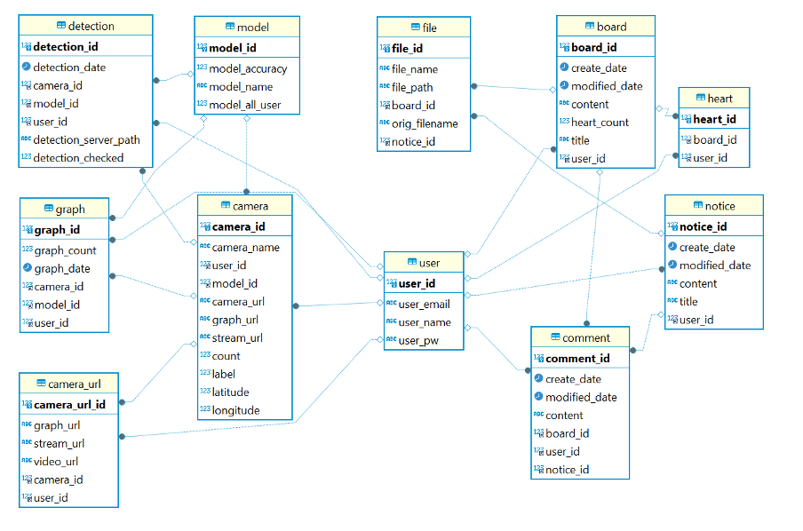
- CCTV
실시간 영상 전송: CCTV는 실시간 영상을 AI 서버로 전송한다. - AI Server
FastAPI 프레임워크를 이용, 전송된 영상을 AI 모델이 분석한다. AI 모델은 다양한 객체 감지, 화재 감지, 흡연 감지, 낙상 감지, 킥보드 헬멧 감지, 안전모 감지 모델을 수행한다. 해당 결과 영상은 AI 서버에 저장, 분석 결과는 DATABASE에 저장한다. - Front-End
React를 이용해 구축하였고 백앤드(Spring-Boot) 서버와 REST API 통신을 바탕으로 이를 사용자에게 표시할 수 있다. 여기엔 실시간 영상, 검출 변화량 그래프, 카메라별 검출 순위, 모델 정확도 테이블이 포함되어 있다. - Back-End
Spring Boot 프레임워크를 사용하여 구축하였고 감지 내역, 카메라 정보, 게시판,사용자 정보 등을 저장할 MariaDB 데이터 베이스와 연동되어 데이터를 저장하고 관리한다.
주요 기능
1. 메인 화면
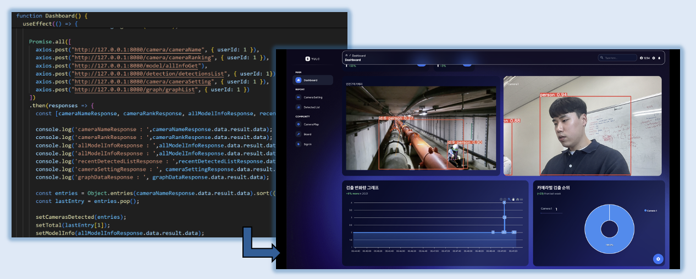
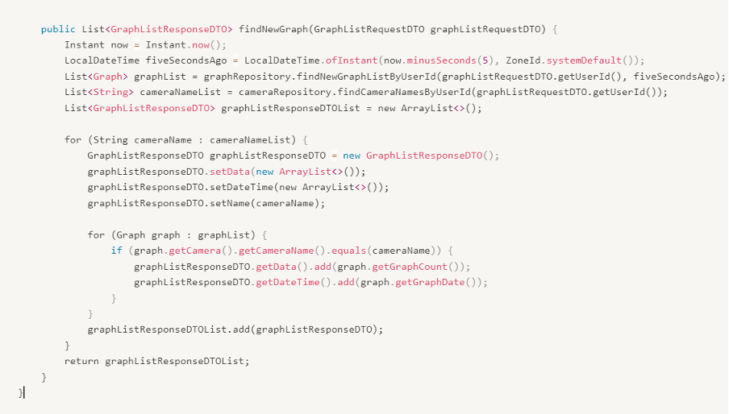
- 메인 화면의 경우 최근 감지내역 리스트와 검출 순위, 실시간 스트리밍, 실시간 그래프를 확인할 수 있습니다.
- Promise를 사용해 비동기적으로 데이터들을 불러와 보여줍니다. 감지내역, 검출 순위 등은 Spring-Boot 서버와 Rest API로 통신합니다.
- React의 state를 변경해 각 값들을 채워 넣어줍니다.
- Python에서 FastAPI를 사용해 스트리밍한 주소를 넣어 실시간 영상을 확인할 수 있습니다.
- 해당 요청들은 5초에 한번씩 다시 요청되어 값을 재할당하는 Polling 방식입니다.
2. 카메라 세팅
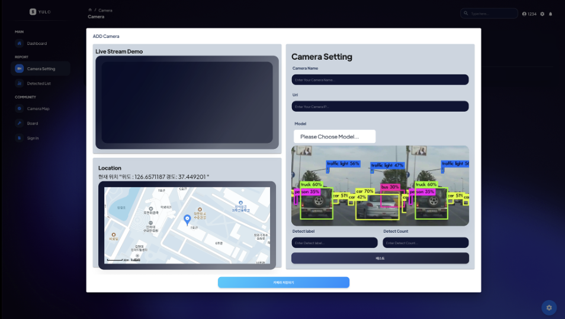
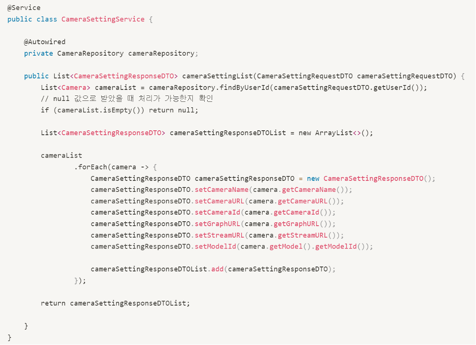
- 카메라 세팅의 경우 원하는 CCTV의 스트리밍 IP를 통해 값을 넣어주고 추가로 원하는 AI 모델과 검출할 타입, 수를 지정해 줍니다. 지도 좌표또한 입력해 이를 데이터베이스에 저장합니다.
- 현재 모든 모델은 YOLOv8, YOLOv5 모델을 이용해 학습을 진행하였고 낙상감지의 경우 Pose 모델을 이용해 학습했습니다.
- 데이터 셋의 경우 roboflow의 데이터셋을 이용해 학습을 진행하였습니다.
3. 감지내역
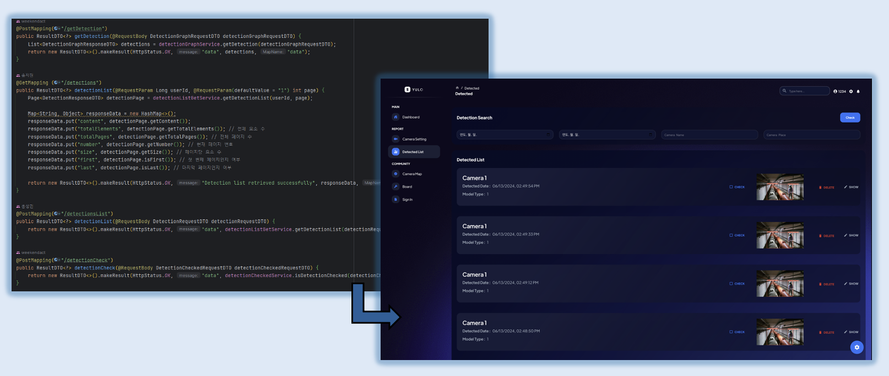
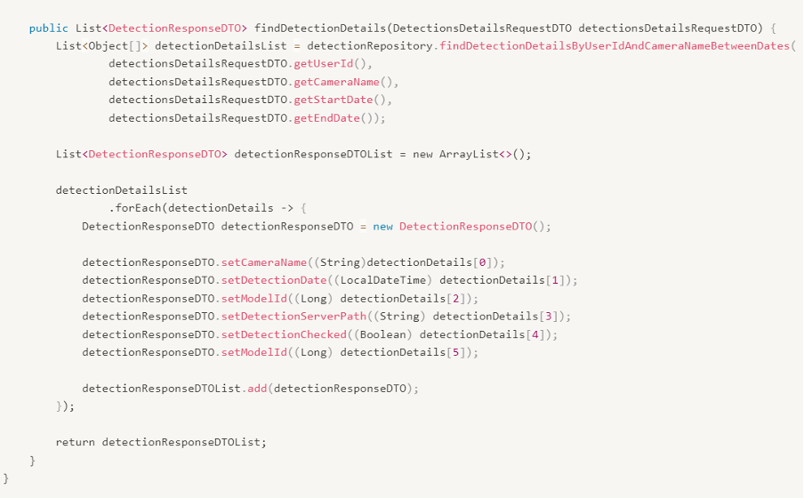
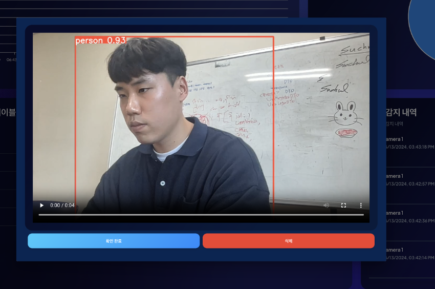
- 감지내역에선 설정해 놓은 값을 토대로 검출이 되었을 시에 python 서버에서 5초 정도 녹화된 영상 내역들을 보여줍니다.
- 해당 요소 클릭시 모달 창을 통해 확인이 가능합니다.
4. 카메라 지도
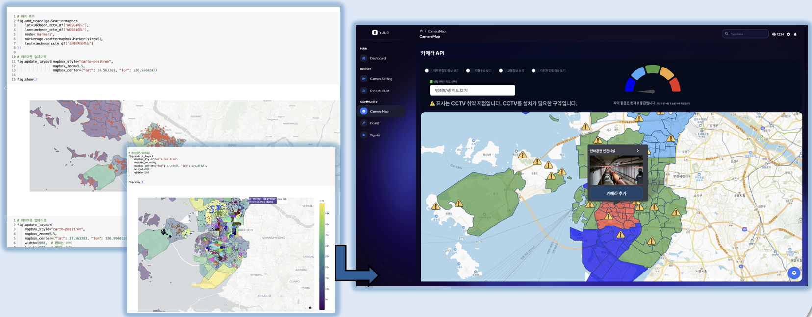
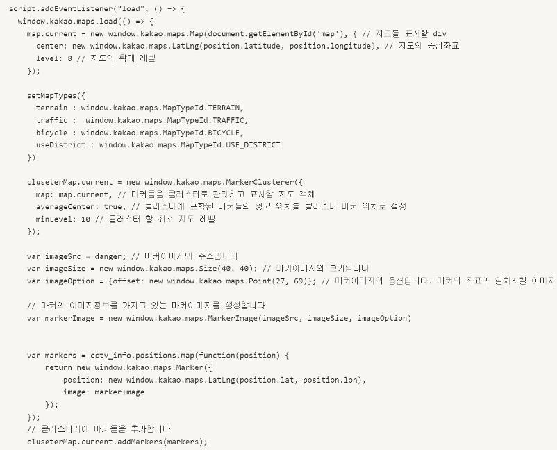
- 인천 광역시에 대한 geojson 파일을 통해 지역별 구역화를 시켰습니다.
- 해당 구역별을 토대로 공공 데이터셋과 여러 기관에서 가져온 안전사고 데이터셋을 이용해 구역의 안전사고 유형별 발생 위험도를 알 수 있습니다.
- 인천 광역시에 설치된 CCTV의 좌표를 이용해 설치가 부족한 지역을 토대로 취약지점을 알 수 있습니다.
- 해당 데이터는 colab을 이용해 데이터 분석 및 DBSCAN 머신러닝 모델을 이용해 취약지점을 산출했습니다.
5. 게시판
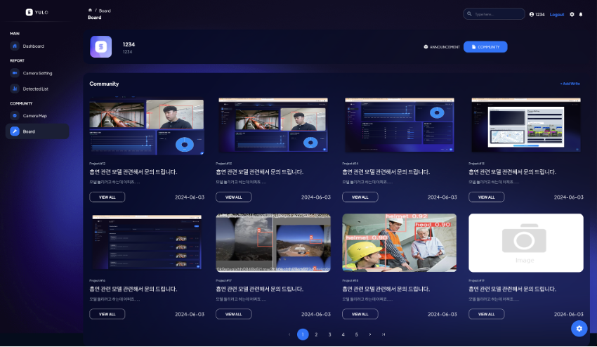
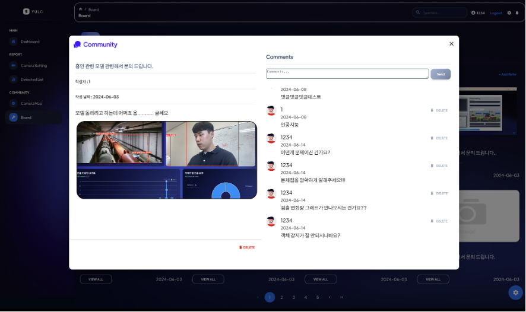